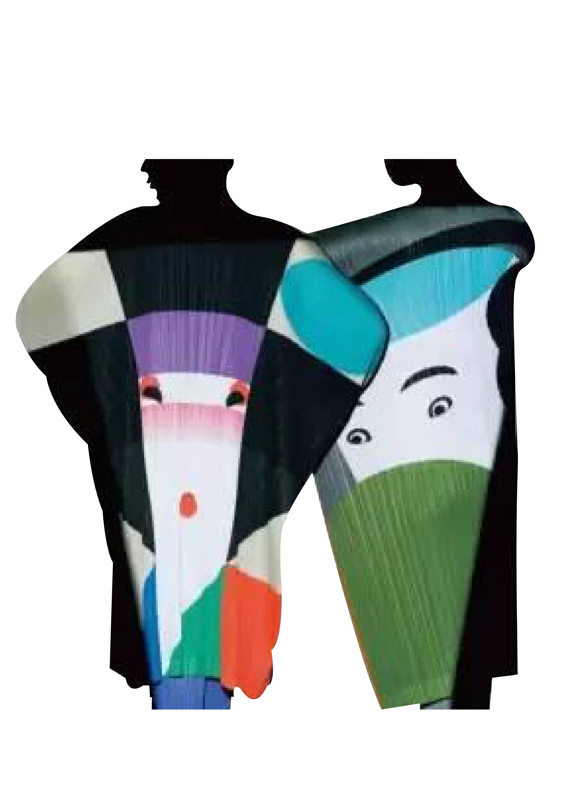
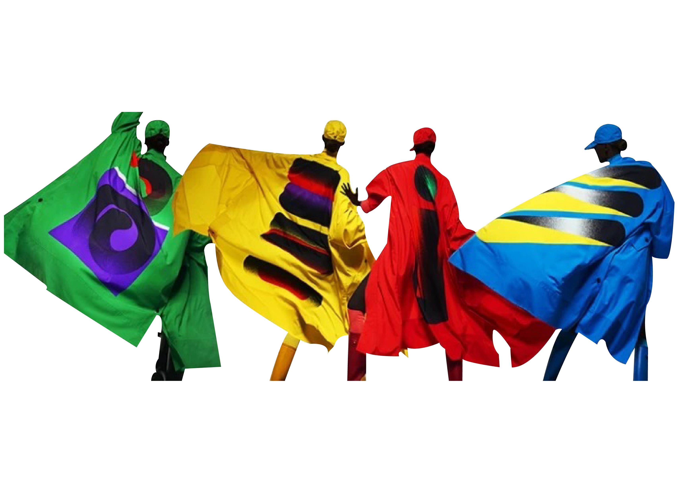
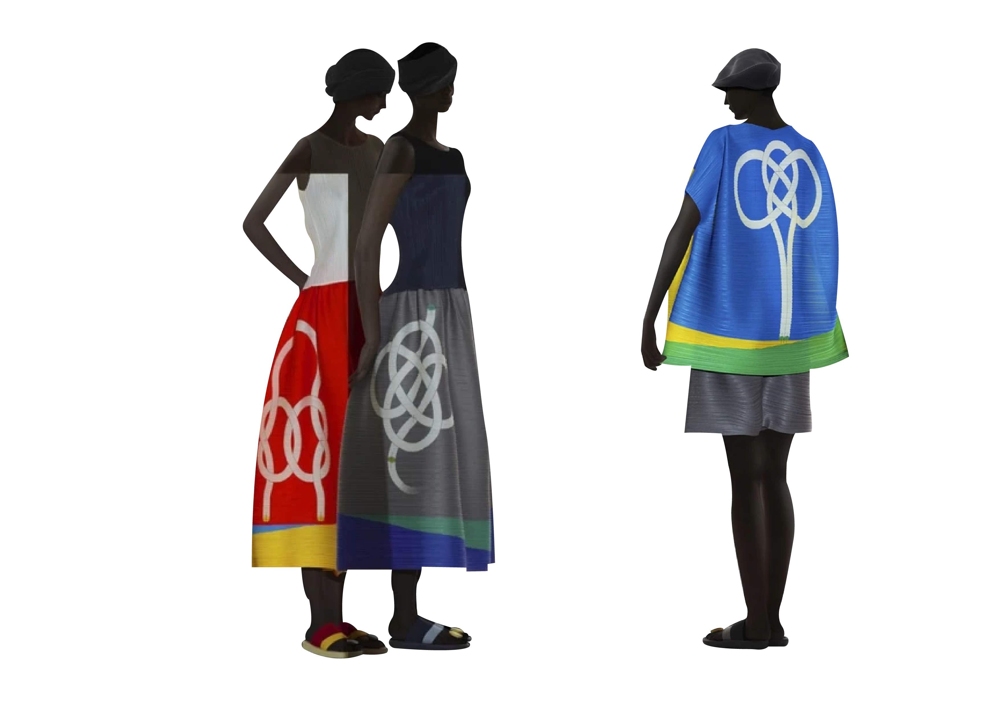
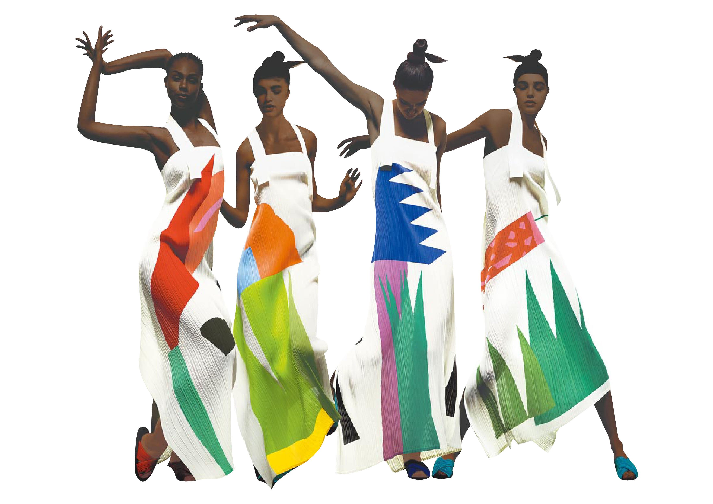
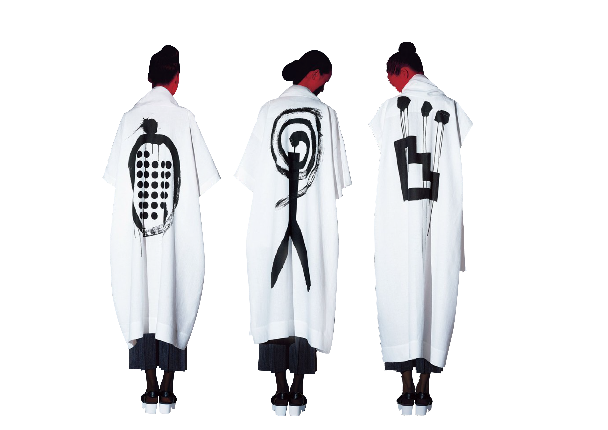
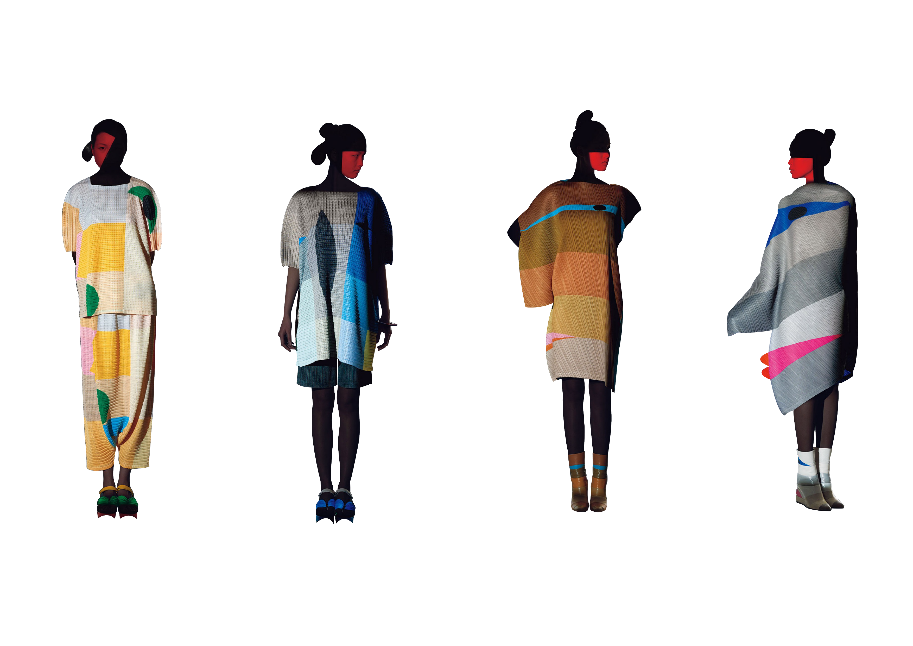

兩人相識於60 年代，此後一直保持著深入的交流與合作。
三宅一生出於對田中一光工作的尊敬，並感謝他給予的諸多啟發，特別「親自」設計了以田中一光的作品為原型，將它們融入於服飾中，
於是誕生的「Ikko Tanaka Issey Miyake」系列。
三宅一生這樣談論田中一光：
“我在學習平面設計時，田中一光已經是像神一樣存在的人了，他的作品也深深的印在我的心裡，難以忘卻。
在我獲得每日設計獎後不久，田中一光便說要我出書，我想我現在是剛剛站在起跑線上，出作品專輯甚麼的還沒想過，但是田中一光卻看到了我的發展未來。
托田中一光的福，由於專輯的出版，我工作中鮮為人知的一面得到了正確的評價。
他不管做什麼都非常的認真，要求非常的嚴厲，這是理所當然的，但他對自己要求更嚴。田中一光的價值觀從很大的意義上講可以說是在創造時代”

此系列選取田中一光「日本舞蹈」、「寫樂二百年」、「粗體記號的變化」作為原型，
將它們融入PLEATS PLEASE ISSEY MIYAKE招牌褶皺中，忠實再現原創作品的大小和色彩，通過穿著後的立體化，放大田中一光作品的魅力。

兩系列除了採用一貫的褶皺材料之外，還選用了 100% 的聚酯纖維製造運動外套，透過穿者的一舉一動，為作品的圖案帶來全新的活力。
《Gradation》系列是田中一光使用日語平假名或英文字母為主題創作，文字以圓形、方形等幾何形態呈現，採用磨砂漸變為其增添動態感。《Work：I》展現出字母的造型之美，《Work:つ》展現文字的書寫軌跡。
《Work: Q》系列以字母Q為靈感創作，演示Q如何從圓柱體變換成球體的過程，每一個作品都代表著一個形態。選用的2幅作品都以黑色為起點，在變化中加入了其他顏色，大膽的顏色組合和出乎意料的圖案結構超越了原圖案的美感。

Rope系列中以田中一光經常用到的繩子作為設計主題。
繩子反映了日本傳統的繩結技藝，但繩結從不繫緊，由此展現繩結的複雜結構，呈現一種好像要解開的柔軟感和流動感。
因此繩子曾以不同的形態出現在田中一光的諸多作品之中，可說是反映他創造力的標誌性元素之一。

此系列透過筆直的線條和色塊呈現出植物的樣貌。
田中一光說：「我使用利刃裁成紙片，結合孩子自由的繪畫感，以彩色紙片拼貼，混合了百合和日本鳶尾花，創造出想像中的花朵，幽默的命名為『舌頭草』。」
作品以鮮明的輪廓和極簡的色塊結合而成，搭配皺褶素材之外，也推出如微風輕拂般剪裁的棉質外套與裙裝。

傳統的水墨風格服裝，還特意推出一套便攜式燈具，可以在不使用時折疊成平面。服裝上的圖案基於兩個田中的設計，臉部和Bokugi（墨戲），是由田中一光在 90 年代設計的。

Donec eget ex magna. Interdum et malesuada fames ac ante ipsum primis in faucibus. Pellentesque venenatis dolor imperdiet dolor mattis sagittis magna etiam.